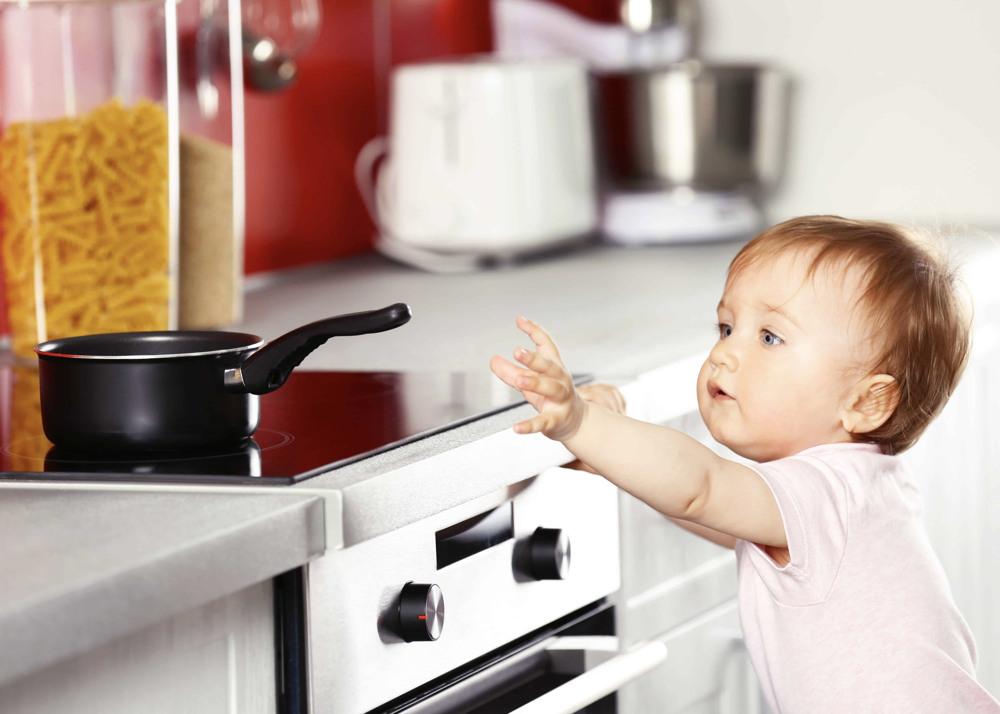
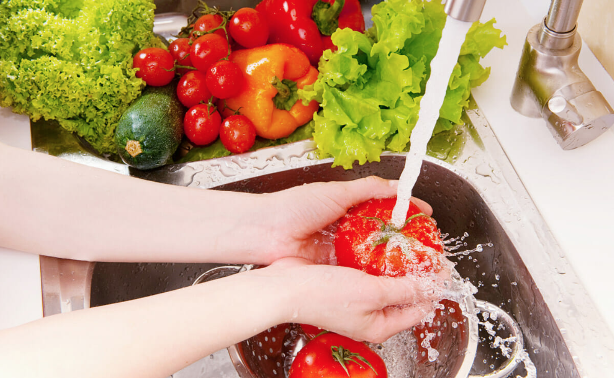

Основи на кулинарната безопасност: Как да избегнем грешки и да готвим безопасно

Кулинарната безопасност е от ключово значение не само за създаването на вкусна храна, но и за гарантиране на здравето на вас и вашите близки. Често сме съсредоточени върху рецепти и техники за готвене, но безопасността в кухнята е основен аспект, който не бива да се пренебрегва. Тази статия ще ви предостави изчерпателни съвети и основни принципи, които да следвате, за да избегнете грешки и рискове, свързани с хигиената и безопасността в кухнята.
Хигиена в кухнята
- Миене на ръце: Измивайте ръцете си със сапун и топла вода преди, по време и след работа с храна.
- Поддържане на чистота на повърхностите: Почиствайте плотовете, дъските за рязане и приборите преди и след употреба.
- Сменяйте кухненските гъби и кърпи: Измивайте ги редовно и ги сменяйте често.
Съхранение на храна
- Температурен контрол: Хладилникът трябва да бъде под 4°C, а фризерът -18°C.
- Разделяне на сурова и готова храна: Използвайте отделни контейнери и найлонови пликове.
- Проверка на сроковете на годност: Проверявайте редовно и изхвърляйте храна с неприятна миризма или промяна в цвета.

Работа с храна
- Измиване на продуктите: Измивайте добре плодовете и зеленчуците под течаща вода.
- Подготовка на сурово месо: Използвайте отделна дъска за рязане и ножове.
- Готвене до безопасна температура:
- Пилешко: 74°C
- Телешко и свинско: 63°C
- Риба: 62°C
Безопасност при използване на уреди
- Работа с ножове: Дръжте ги остри и използвайте правилната техника за рязане.
- Печене и варене: Никога не оставяйте тигани или тенджери без наблюдение.
- Работа с електроуреди: Проверявайте кабелите и никога не потапяйте уреди във вода.
Предотвратяване на хранителни натравяния
- Избягвайте кръстосано замърсяване: Мийте ръцете и приборите след контакт със сурово месо.
- Проверявайте качеството на съставките: Използвайте само прясно месо и риба.
- Топлинна обработка: Уверете се, че храната е термично обработена до подходящата температура.
Алергени и специални хранителни нужди
- Избягване на алергени: Четете етикетите на продуктите.
- Съобразяване с диетични ограничения: Използвайте заместители на алергените.
Безопасност при сервиране
- Температура на храната: Сервирайте горещите ястия горещи и студените ястия студени.
- Използване на чисти съдове: Уверете се, че всички чинии и прибори са измити.
- Остатъци: Съхранявайте в хладилник и консумирайте в рамките на 2 дни.
Чести грешки и как да ги избегнем
- Оставяне на храна на стайна температура: Охладете храната възможно най-бързо след приготвяне.
- Недостатъчно термична обработка: Използвайте кухненски термометър.
- Използване на една и съща дъска за рязане: Инвестирайте в отделни дъски за различни храни.
Кулинарната безопасност е основополагаща за всяка успешна рецепта. Следвайки тези съвети, ще гарантирате здравето и безопасността на вашите близки, докато създавате вкусни ястия.